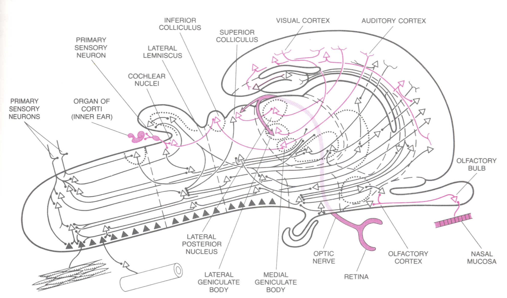

The Organization of the Brain
Overview
By functional organization of the brain, we mean an integrated view of neurophysiology, cellular and systems neuroscience, and the anatomy of the central nervous system. The best introductory reading I know of is this classic Scientific American article by Walle_Nauta and Michael Feirtag titled "The organization of the brain."

The peripheral sensory apparatus for hearing and vision involves projections to the thalamus, but olfaction does not (why?). Retinal projections to the lateral geniculate nucleus of the thalamus, from here to the visual cortex. The retina also projects to the superior colliculus. Auditory projections from the inferior colliculus to the medial geniculate nucleus of the thalamus, from here to auditory cortex.
As discussed in Butler, A. B., & Hodos, W. (2005), lemnothalamic thalamic nuclei receive sensory projections from the ascending lemniscal systems that do not synapse in the mesencephalic colliculi (inferior and superior colliculus). Collothalamic thalamic nuclei receive sensory projections from the mesencephalic colliculi.
Further Reading
Nauta, W. J., & Feirtag, M. (1979). The organization of the brain. Scientific American, 241(3), 88-111. [JSTORE]
Brain structure and its origins. Instructor: Gerald E. Schneider. MIT Open Courseware
Butler, A. B., & Hodos, W. (2005). Comparative vertebrate neuroanatomy: Evolution and adaptation. John Wiley & Sons.